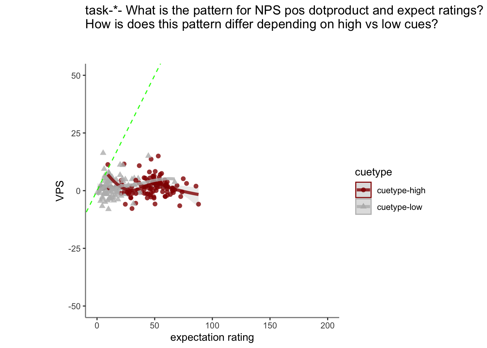
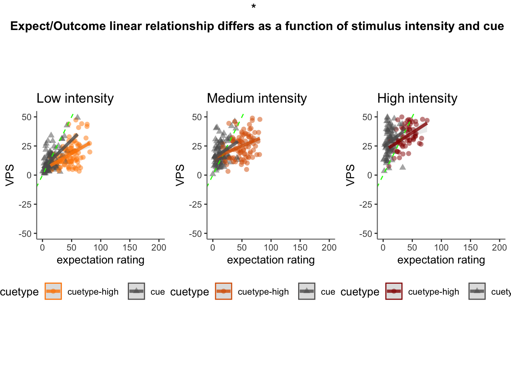
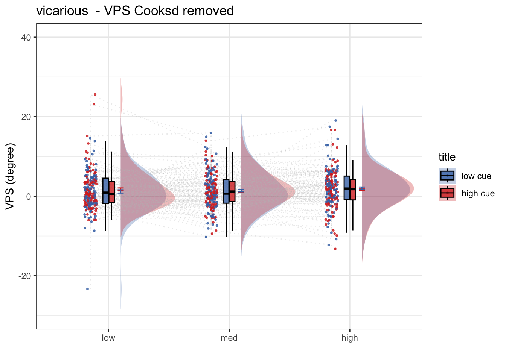
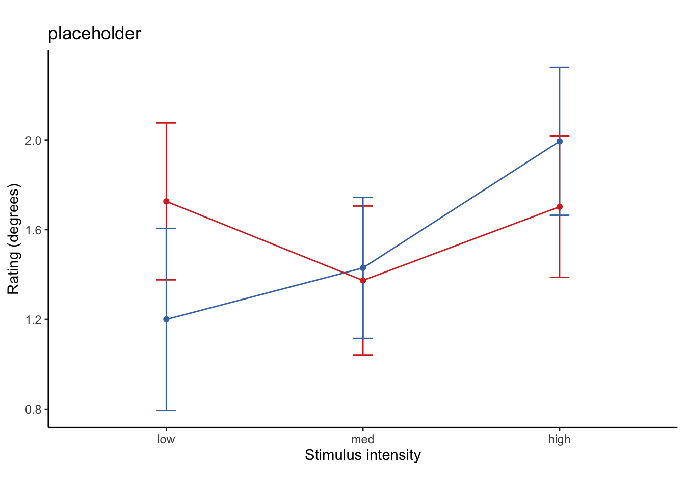

Chapter 35 [fMRI] Vicarious signature ~ single trial
author: "Heejung Jung"
date: "2023-03-04"Step 1: Common parameters
# step 1: load data
for (signature_key in c("VPS")) {
#c("NPS", "NPSpos", "NPSneg", "VPS", #"VPSnooccip", "ThermalPain", "MechPain", "GeneralAversive", "AversiveVisual"
# "ZhouVPS", "PINES", "GSR", "GeuterPaincPDM")) {
dv_keyword = signature_key
signature_name = signature_key
# step 1: common parameters _______
main_dir <- dirname(dirname(getwd()))
#signature_key = "NPSpos"
analysis_folder = paste0("model36_iv-task-stim_dv-VPS")
sig_name <-
Sys.glob(file.path(
main_dir,
"analysis/fmri/nilearn/signature_extract",
paste0(
"signature-",
signature_key,
"_sub-all_runtype-pvc_event-stimulus.tsv"
)
)) # nolint
print(sig_name)
analysis_dir <-
file.path(main_dir,
"analysis",
"mixedeffect",
analysis_folder,
as.character(Sys.Date())) # nolint
dir.create(analysis_dir,
showWarnings = FALSE,
recursive = TRUE)
savedir <- analysis_dir
# step 2: load data
df = read.csv(sig_name)
sig_df = df %>% separate(
singletrial_fname,
sep = "_",
c(
"sub",
"ses",
"run",
"runtype",
"event",
"trial",
"cuetype",
"stimintensity"
)
)
sig_df = sig_df %>% separate(
stimintensity,
into = c(NA, "stimintensity"),
extra = "drop",
fill = "left"
)
pvc <- simple_contrasts_singletrial(sig_df)
pvc$task[pvc$runtype == "runtype-pain"] <- "pain"
pvc$task[pvc$runtype == "runtype-vicarious"] <- "vicarious"
pvc$task[pvc$runtype == "runtype-cognitive"] <- "cognitive"
pvc$task <- factor(pvc$task)
# step 3: parameters
taskname = "all"
plot_keyword = "stimulusintensity"
ggtitle_phrase = "(3 tasks x 3 stimulus intensity)"
pvc$task = factor(pvc$task)
plot_keys <- list(
sub_mean = "mean_per_sub",
group_mean = "mean_per_sub_norm_mean",
legend_keyword = "stimulus intensity",
se = "se",
subject = "sub",
ggtitle = paste0(
str_to_title(signature_key),
" dot product: ",
str_to_title(taskname),
' ',
ggtitle_phrase,
" (N = ",
length(unique(pvc$sub)),
")"
),
title = paste0(
str_to_title(signature_key),
" - ",
str_to_title(plot_keyword)
),
xlab = "",
ylab = paste(signature_key, " (dot product)"),
ylim = c(-250, 500)
)
# step 4: within between summary
groupwise <- data.frame()
subjectwise <- data.frame()
summary <- summary_for_plots_PVC(
df = pvc,
# taskname = taskname,
groupwise_measurevar = plot_keys$sub_mean,
# "mean_per_sub",
subject_keyword = plot_keys$subject,
# "sub",
model_iv1 = "task",
model_iv2 = "stim_ordered",
dv = signature_key #"NPSpos"
)
subjectwise <<- as.data.frame(summary[[1]])
groupwise <<- as.data.frame(summary[[2]])
if (any(startsWith(dv_keyword, c("expect", "Expect")))) {
plot_keys$color <- c("#1B9E77", "#D95F02", "#D95F02")
} else {
plot_keys$color <- c("#4575B4", "#FFA500", "#D73027")
}
# step 5: plot
iv2 = "stim_ordered"
iv1 = "task"
taskname = "all"
if (any(startsWith(dv_keyword, c("expect", "Expect")))) {
color <- c("#1B9E77", "#D95F02", "#D95F02")
} else {
color <- c("#4575B4", "#FFA500", "#D73027")
}
subject_mean <- "mean_per_sub"
sub_mean = subject_mean
group_mean <- "mean_per_sub_norm_mean"
se <- "se"
ylim <- c(-25, 26)
subject <- "sub"
ggtitle_phrase <- "(3 tasks x 3 stimulus intensity)"
ggtitle <-
paste0(
str_to_title(signature_name),
" dot product: ",
str_to_title(taskname),
' ',
ggtitle_phrase,
" (N = ",
length(unique(pvc$sub)),
")"
)
title <-
paste0(str_to_title(dv_keyword),
" - ",
str_to_title(plot_keys$legend_keyword))
xlab <- ""
plot_keyword = "stimintensity"
ylab <- paste(signature_name, " (dot product)")
plot2_savefname <- file.path(
analysis_dir,
paste(
"signature_task-",
taskname,
"_event-",
plot_keyword,
"_dv-",
signature_key,
"_",
as.character(Sys.Date()),
".png",
sep = ""
)
)
p <- plot_halfrainclouds_twofactor(
subjectwise,
groupwise,
iv1,
iv2,
subject_mean,
group_mean,
se,
subject,
ggtitle,
title,
xlab,
ylab,
taskname,
ylim,
w = 10,
h = 6,
dv_keyword,
color,
plot2_savefname
)
p
}## [1] "/Users/h/Dropbox (Dartmouth College)/projects_dropbox/social_influence_analysis/analysis/fmri/nilearn/signature_extract/signature-VPS_sub-all_runtype-pvc_event-stimulus.tsv"## Warning: Removed 1 rows containing missing values (`geom_half_violin()`).35.1 load behavioral data
main_dir = dirname(dirname(getwd()))
print(main_dir)## [1] "/Users/h/Dropbox (Dartmouth College)/projects_dropbox/social_influence_analysis"datadir = file.path(main_dir, 'data', 'beh', 'beh02_preproc')
taskname = '*'
subject_varkey <- "src_subject_id"
iv <- "param_stimulus_type";
iv_keyword <- "stim";
dv <- "event04_actual_angle"; dv_keyword <- "outcome"
exclude <- "sub-0001|sub-0003|sub-0004|sub-0005|sub-0025|sub-0999"
p.df <- load_task_social_df(datadir, taskname = "pain", subject_varkey, iv, dv, exclude)
v.df <- load_task_social_df(datadir, taskname = "vicarious", subject_varkey, iv, dv, exclude)
c.df <- load_task_social_df(datadir, taskname = "cognitive", subject_varkey, iv, dv, exclude)
p.df2= p.df %>%
arrange(src_subject_id ) %>%
group_by(src_subject_id) %>%
dplyr::mutate(trial_index = row_number())
# dplyr::mutate(trial_index = dplyr::row_number())
# mutate(trial_index = row_number())
data_p <- p.df2 %>%
group_by(src_subject_id, session_id, param_run_num) %>%
dplyr::mutate(trial_index = row_number(param_run_num))
v.df2= v.df %>%
arrange(src_subject_id ) %>%
group_by(src_subject_id) %>%
dplyr::mutate(trial_index = row_number())
data_v <- v.df2 %>%
group_by(src_subject_id, session_id, param_run_num) %>%
dplyr::mutate(trial_index = row_number(param_run_num))
c.df2= c.df %>%
arrange(src_subject_id ) %>%
group_by(src_subject_id) %>%
dplyr::mutate(trial_index = row_number()-1)
data_c <- c.df2 %>%
group_by(src_subject_id, session_id, param_run_num) %>%
dplyr::mutate(trial_index = row_number(param_run_num) )
p.sub <- data_p[,c("src_subject_id", "session_id", "param_run_num", "param_task_name", "event02_expect_angle", "param_cue_type", "param_stimulus_type", "event04_actual_angle", "trial_index")]
v.sub <- data_v[,c("src_subject_id", "session_id", "param_run_num", "param_task_name", "event02_expect_angle", "param_cue_type", "param_stimulus_type", "event04_actual_angle", "trial_index")]
c.sub <- data_c[,c("src_subject_id", "session_id", "param_run_num", "param_task_name", "event02_expect_angle", "param_cue_type", "param_stimulus_type", "event04_actual_angle", "trial_index")]
# sub, ses, run, runtype, event, trial, cuetype, stimintensity
# src_subject_id, session_id, param_run_num, param_task_name, event02_expect_angle, param_cue_type, param_stimulus_type, event04_actual_angle
pvc.sub = rbind(p.sub, v.sub, c.sub)pvc.sub$trial_ind <- pvc.sub$trial_index -1
pvc.sub$sub <- sprintf("sub-%04d", pvc.sub$src_subject_id)
pvc.sub$ses <- sprintf("ses-%02d", pvc.sub$session_id)
pvc.sub$run <- sprintf("run-%02d", pvc.sub$param_run_num)
pvc.sub$runtype <- sprintf("runtype-%s", pvc.sub$param_task_name)
pvc.sub$trial <- sprintf("trial-%03d", pvc.sub$trial_ind)
pvc.sub[c('cue', 'DEPc')] <- str_split_fixed(pvc.sub$param_cue_type , '_', 2)
pvc.sub$cuetype <- sprintf("cuetype-%s", pvc.sub$cue)
pvc.sub[c('stimintensity', 'DEP')] <- str_split_fixed(pvc.sub$param_stimulus_type , '_', 2)
# merge
pvc.beh <- pvc.sub[,c("sub", "ses", "run", "runtype", "trial", "cuetype", "stimintensity","event02_expect_angle", "event04_actual_angle")]
df_merge <- merge(pvc, pvc.beh,
by.x = c("sub", "ses", "run", "runtype", "trial", "cuetype", "stimintensity"),
by.y = c("sub", "ses", "run", "runtype", "trial", "cuetype", "stimintensity")
)35.2 expect & NPS as a function of cue
v.sig <- df_merge[df_merge$runtype == "runtype-vicarious",]
iv1 = "event02_expect_angle"; iv2 = "VPS"
df_dropna <-
v.sig[!is.na(v.sig$event02_expect_angle) & !is.na(v.sig$VPS),]
total <-
plot_twovariable(
df_dropna, iv1, iv2,
group = "cuetype", subject = "sub",
xmin=0, xmax=200, ymin=-50, ymax=50,
xlab = "expectation rating",
ylab = signature_key,
ggtitle = "all stimulus intensity",
color_scheme = c("cuetype-high" ="#941100","cuetype-low" = "#BBBBBB"),
alpha = .8, fit_lm = TRUE
)
total + labs(title =paste0("task-",taskname, "- What is the pattern for NPS pos dotproduct and expect ratings? \nHow is does this pattern differ depending on high vs low cues?\n\n")
)## `geom_smooth()` using method = 'loess' and formula = 'y ~ x'
## `geom_smooth()` using method = 'loess' and formula = 'y ~ x'
# geom_line(method="lm", alpha=0.3, size=1, span=0.5) # geom_smooth(method=lm, se = TRUE)
# +geom_smooth(method = "lm", alpha=0.1, size=0, span=0.5)
35.3 2x3 stim*cue
combined_se_calc_cooksd <- data.frame()
taskname = "vicarious"
ggtitle <- paste(taskname, " - actual judgment (degree)")
title <- paste(taskname, " - actual")
subject <- "sub"
w <- 10
h <- 6
data <- v.sig
# [ CONTRASTS ] ________________________________________________________________________________ # nolint
# contrast code ________________________________________
data$stim[data$stimintensity == "low"] <- -0.5 # social influence task
data$stim[data$stimintensity == "med"] <- 0 # no influence task
data$stim[data$stimintensity == "high"] <- 0.5 # no influence task
data$stim_factor <- factor(data$stimintensity)
# contrast code 1 linear
data$stim_con_linear[data$stimintensity == "low"] <- -0.5
data$stim_con_linear[data$stimintensity == "med"] <- 0
data$stim_con_linear[data$stimintensity == "high"] <- 0.5
# contrast code 2 quadratic
data$stim_con_quad[data$stimintensity == "low"] <- -0.33
data$stim_con_quad[data$stimintensity == "med"] <- 0.66
data$stim_con_quad[data$stimintensity == "high"] <- -0.33
# social cude contrast
data$social_cue[data$cuetype == "cuetype-low"] <- -0.5 # social influence task
data$social_cue[data$cuetype == "cuetype-high"] <- 0.5 # no influence task
stim_con1 <- "stim_con_linear"
stim_con2 <- "stim_con_quad"
iv1 <- "social_cue"
dv <- "VPS"
# [ MODEL ] _________________________________________________ # nolint
model_savefname <- file.path(
analysis_dir,
paste("lmer_task-", taskname,
"_rating-", dv_keyword,
"_", as.character(Sys.Date()), "_cooksd.txt",
sep = ""
)
)
cooksd <- lmer_twofactor_cooksd_fix(
data, taskname, iv1, stim_con1, stim_con2, dv,
subject, dv_keyword, model_savefname, 'random_intercept', print_lmer_output = FALSE
)
influential <- as.numeric(names(cooksd)[
(cooksd > (4 / as.numeric(length(unique(data$sub)))))
])
data_screen <- data[-influential, ]
# [ PLOT ] reordering for plots _________________________ # nolint
data_screen$cue_name[data_screen$cuetype == "cuetype-high"] <- "high cue"
data_screen$cue_name[data_screen$cuetype == "cuetype-low"] <- "low cue"
data_screen$stim_name[data_screen$stimintensity == "high"] <- "high"
data_screen$stim_name[data_screen$stimintensity == "med"] <- "med"
data_screen$stim_name[data_screen$stimintensity == "low"] <- "low"
# DATA$levels_ordered <- factor(DATA$param_stimulus_type, levels=c("low", "med", "high"))
data_screen$stim_ordered <- factor(
data_screen$stim_name,
levels = c("low", "med", "high")
)
data_screen$cue_ordered <- factor(
data_screen$cue_name,
levels = c("low cue", "high cue")
)
model_iv1 <- "stim_ordered"
model_iv2 <- "cue_ordered"
# [ PLOT ] calculate mean and se _________________________
actual_subjectwise <- meanSummary(
data_screen,
c(subject, model_iv1, model_iv2), dv
)
actual_groupwise <- summarySEwithin(
data = actual_subjectwise,
measurevar = "mean_per_sub",
withinvars = c(model_iv1, model_iv2), idvar = subject
)
actual_groupwise$task <- taskname
# https://stackoverflow.com/questions/29402528/append-data-frames-together-in-a-for-loop/29419402
combined_se_calc_cooksd <- rbind(combined_se_calc_cooksd, actual_groupwise)
# if(any(startsWith(dv_keyword, c("expect", "Expect")))){color = c( "#1B9E77", "#D95F02")}else{color=c( "#4575B4", "#D73027")} # if keyword starts with
# print("groupwisemean")
# [ PLOT ] calculate mean and se ----------------------------------------------------------------------------
sub_mean <- "mean_per_sub"
group_mean <- "mean_per_sub_norm_mean"
se <- "se"
subject <- "sub"
ggtitle <- paste(taskname, " - VPS Cooksd removed")
title <- paste(taskname, " - VPS")
xlab <- ""
ylab <- "VPS (degree)"
ylim <- c(-30,40)
dv_keyword <- "VPS"
if (any(startsWith(dv_keyword, c("expect", "Expect")))) {
color <- c("#1B9E77", "#D95F02")
} else {
color <- c("#4575B4", "#D73027")
} # if keyword starts with
plot_savefname <- file.path(
analysis_dir,
paste("raincloud_task-", taskname,
"_rating-", dv_keyword,
"_", as.character(Sys.Date()), "_cooksd.png",
sep = ""
)
)
g <- plot_rainclouds_twofactor(
actual_subjectwise, actual_groupwise, model_iv1, model_iv2,
sub_mean, group_mean, se, subject,
ggtitle, title, xlab, ylab, taskname,ylim,
w, h, dv_keyword, color, plot_savefname
)## Warning in geom_line(data = subjectwise, aes(group = .data[[subject]], y
## = .data[[sub_mean]], : Ignoring unknown aesthetics: fill## Warning: Duplicated aesthetics after name standardisation: width## Warning: Using the `size` aesthietic with geom_polygon was deprecated in ggplot2 3.4.0.
## ℹ Please use the `linewidth` aesthetic instead.g ## lineplot
plot_lineplot_twofactor(actual_groupwise, taskname = "vicarious",
iv1 = "stim_ordered", iv2 = "cue_ordered",
mean = "mean_per_sub_norm_mean", error = "se",
color = c("#4575B4", "#D73027"), ggtitle = "placeholder")